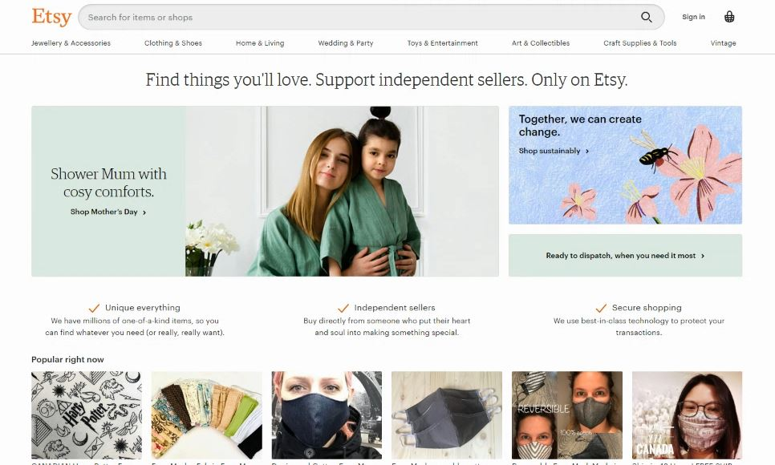
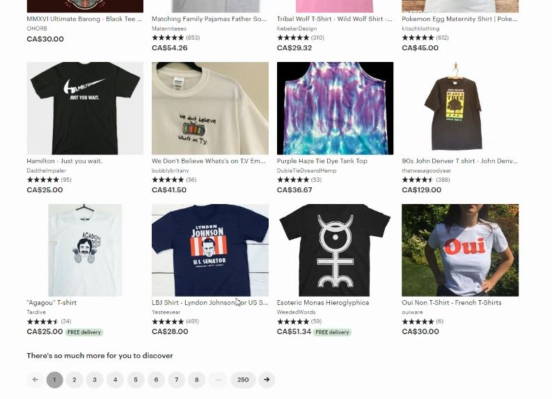
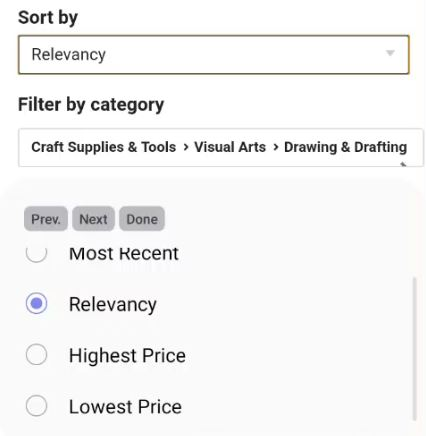
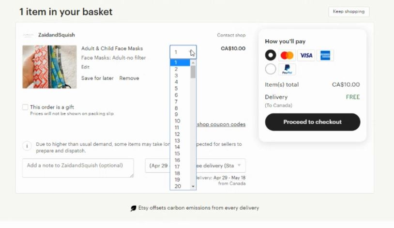

Introduction
The primary purpose of my usability test was to test the searching and filtering features of Etsy. My method was to give my three participants three tasks involving different items to search for, prioritizing different aspects. They were asked to articulate their thought process as they browsed the website, and to limit their use of the search bar as much as possible. The three tasks were as follows:
- You are on a tight budget and you need at least 10 face masks of any type.
- You are looking for your supplies for back to school/work, and you want the highest rated option.
- You are looking for a birthday present for a friend who likes gardening.
The demographic summary of my participants:
- 54 year old female business manager who spends roughly 40 hours a week online.
- 54 year old male lawyer who spends roughly 60 hours a week online.
- 15 year old male student who spends roughly 85 hours a week online.
The Home Page
Etsy as a whole did not prove to have many usability issues that I could visibly see prior to testing. The design and UI design appeared modern and simplistic upon participants' first viewing. Large amounts of white space and muted colors made for pleasant browsing. It's apparent based on the photos and layout what the purpose and target audience was, without too much reading of text.
 "intuitive", "clean", "pretty" were popular terms to describe the front pageResults
A couple of usability issues did turn up over the course of the tasks. Every one of the participants took note of the plethora of choices and options that are available to varying acceptance. The youngest enjoyed the options, whereas the older participants noted their preference for better curation and filtering capabilities when browsing without the search bar.
 For a site selling general merchandise, Etsy does look a little clutteredNotably, the "Sort by" button was not immediately noticeable to participants on the browser based site. It is debatable whether this was because of the lack of need to use it or because of poor design, but it did take a while for it to be discovered when it was needed. Additionally, on the mobile version of the site, there was no option to sort by "Top Customer Reviews", which prevented easy completion of the second task.
 "Relevancy" also might not be the clearest criteria for sortingThe second issue was that the quantity selection was not readily available until the checkout page. This was not a big issue for most of the participants, but it did add some uncertainty for items that people might want to buy in bulk.
 It might seem obvious that no quantity selection equals "1", but the lack of clarity can be a big deal for penny pinchersConclusion
Of all the findings from this usability test, a couple stood out that was shared by all participants. Every participant encountered some issue with either finding or utilizing the sorting feature effectively. The second common issue was that all participants appeared to be affected in some way by how much there was to look at. Although this might have been related to the design of the tasks themselves (perhaps too unspecific?), or the limitations in using the search bar, I still noticed several hints of participants being slightly overwhelmed by the amount of options.
Moving Forward
I would propose more testing with revised tasks that are designed based on what I've learned from the results. I would make the tasks more detailed so that there is a clearer sense of what to find. Finally, I would test both the desktop and mobile version of the site for all participants. This would help determine the effectiveness of particular design elements, as well as observing the general differences in user experience between the two.